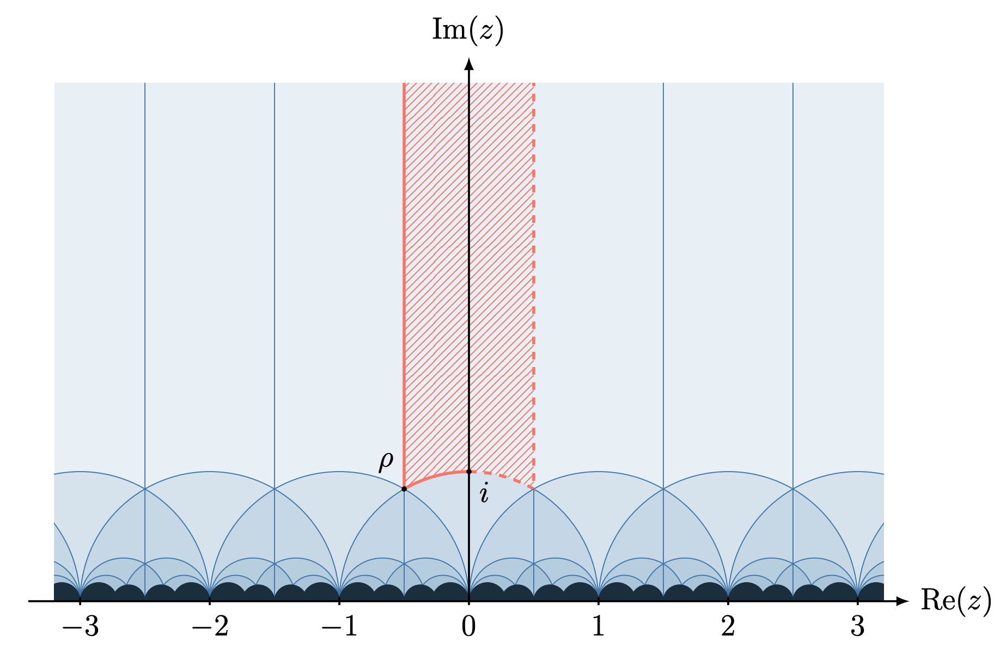
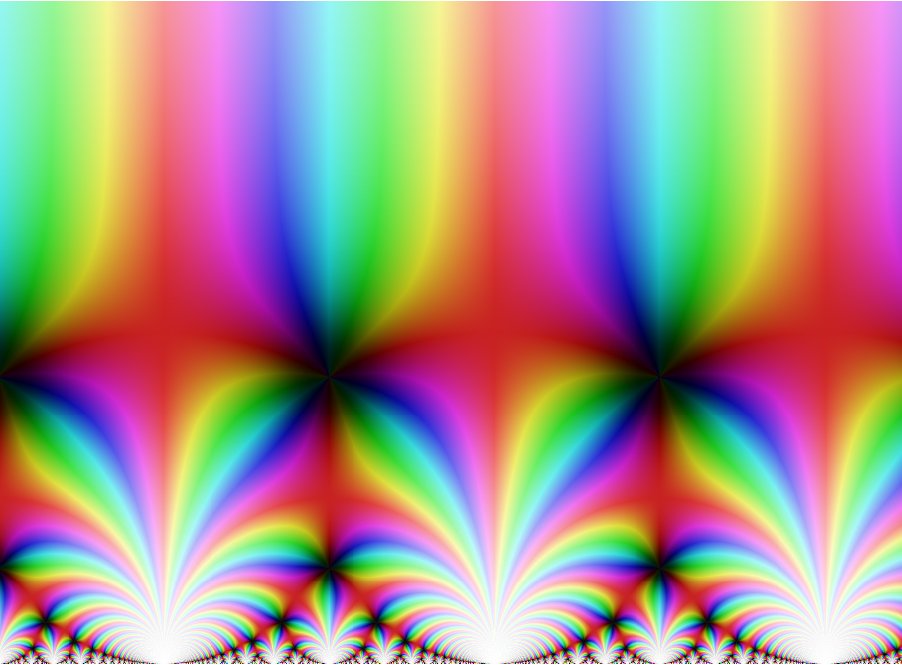

Postdoctoral researcher
Anna Dmitrieva
Currently working on model theory of analytic functions, Existential Closedness, and related problems.
Model theory · Number theory · Geometry
My primary research interests are in model theory, a branch of mathematical logic with a broad range of applications. More specifically, I am interested in applications of model theory to number theory, geometry, algebra, and analysis. My current work focuses mainly on the Zilber–Pink and Existential Closedness problems.
Zilber–Pink is a far-reaching generalisation of several famous Diophantine conjectures, including André–Oort, Manin–Mumford, and Mordell–Lang, concerned with “special” solutions of polynomial equations.
Existential Closedness concerns the solvability of systems of equations involving addition, multiplication, and certain classical functions, such as the complex exponential function and the modular j-function.
Previously, I worked in universal algebra, studying the first- and second-order properties of De Morgan algebras and De Morgan functions.

Two questions connect much of my work: when do equations have solutions, and when do their solutions satisfy unexpected algebraic relations?
Existential Closedness (EC) asks for geometric conditions ensuring that systems of equations involving transcendental functions have solutions. A familiar starting point is the fundamental theorem of algebra: every nonconstant polynomial in one complex variable has a root. For exponential equations, one must also account for identities such as ez + w = ezew and the fact that an exponential never vanishes. The guiding idea is that systems should have solutions unless algebraic or functional relations make them overdetermined.
Replacing exponential expressions by new variables turns the polynomial part of a system into an algebraic variety in ℂn × (ℂ×)n. Solving the system means finding a point on this variety of the form (z1, …, zn, ez1, …, ezn). Zilber’s Exponential Closedness conjecture predicts such a point for every irreducible variety that is free and rotund. Freeness excludes constant nontrivial integer linear combinations of the input coordinates and constant nontrivial multiplicative combinations of the output coordinates. Rotundity requires the image under each integer matrix of rank r, acting additively on inputs and multiplicatively on outputs, to have dimension at least r. This captures constraints that a simple count of equations and variables can miss.
The strong version asks for solutions that are algebraically generic over the parameters defining the equations. It therefore concerns how independent a solution can be, as well as whether one exists. Variants of these questions apply to exponential maps of abelian and semiabelian varieties and to other transcendental functions.
The modular j-function assigns an invariant to each complex elliptic curve represented by a point of the upper half-plane. Its transformation rules play the role of the exponential identities. In particular, rational linear fractional transformations of the input give rise to modular-polynomial relations between the corresponding j-values. These relations encode isogenies between elliptic curves.
The geometric formulation uses an irreducible variety V ⊆ ℂn × ℂn. It is broad if its projection onto any k input–output pairs has dimension at least k. It is free if it has no constant coordinates, rational Möbius relations between inputs, or modular-polynomial relations between outputs.
Modular EC asks for points of the form (z1, …, zn, j(z1), …, j(zn)) on every broad, free irreducible variety. The domain is part of the formulation: one can consider j on the upper half-plane or its extension by Schwarz reflection to both half-planes, ℂ ∖ ℝ. The same geometric hypotheses need not give equivalent existence statements for these two domains.
Adding j′ and j″ leads to systems involving the inputs, the j-values, and their derivatives. The problem is again to identify the algebraic and differential constraints that are forced by the functions, and then to find solutions whenever the remaining equations are compatible with those constraints. A strong version asks for algebraically generic solutions, while differential versions study the corresponding equations in differential fields.
One of my broad research directions is to study EC and Zilber–Pink for j together with its derivatives. This reveals connections between the two problems and gives a more general picture of each: EC supplies solutions, while Zilber–Pink helps control exceptional algebraic relations among them. Differential-algebraic and functional-transcendence methods provide a common framework for exploring these connections.

Zilber–Pink concerns intersections that are larger than a dimension count would suggest. If algebraic varieties V and T lie in a smooth ambient variety S, the expected intersection dimension is dim V + dim T − dim S. An intersection component of greater dimension is called atypical. The conjecture studies this phenomenon when T belongs to an arithmetically distinguished collection of special subvarieties.
A semiabelian variety is an algebraic group that is an extension of an abelian variety by an algebraic torus. These groups provide a natural setting for Diophantine questions: examples include powers of the multiplicative group and products of elliptic curves. In the torsion formulation, special subvarieties are translates of connected algebraic subgroups by torsion points.
The conjecture predicts that a fixed algebraic variety contains only finitely many maximal atypical subvarieties arising from intersections with these special subvarieties. Thus, exceptional intersections should be accounted for by finitely many larger geometric structures. This encompasses the Manin–Mumford phenomenon, while broader formulations connect with Mordell–Lang. Finiteness of maximal atypical subvarieties does not assert finiteness of all special points: infinitely many may lie in a positive-dimensional special subvariety.
For products of modular curves, the special subvarieties are defined by modular-polynomial equations, expressing isogenies between elliptic curves, and by coordinates fixed at j-values of elliptic curves with complex multiplication. Zilber–Pink predicts the same kind of finiteness for maximal atypical intersections. The André–Oort conjecture is an important part of this picture, describing algebraic varieties containing a Zariski-dense set of special points.
I study modular and automorphic versions of these questions, especially Zilber–Pink and EC for j together with j′ and j″. Derivatives retain information that is invisible if one considers only the j-values. The appropriate functional and differential versions of special subvarieties and atypical intersections bring out links between EC and Zilber–Pink and provide a more general picture of both problems.
Ax–Schanuel theorems constrain the algebraic dependencies that can occur among these functions and their arguments. They are central to this approach: together with differential algebra and model theory, they help separate the relations forced by the functions from additional, exceptional relations.
Preprints and publications, newest first. Browse all papers or narrow the list by research area.
No papers match these filters. Try another search or choose “All research areas”.
From 2023 to 2028 I am working on the research project "Model theory, Diophantine geometry, and automorphic functions" supported by EPSRC Open Fellowship EP/X009823/1 and Dame Kathleen Ollerenshaw Fellowship (PI: Vahagn Aslanyan). The main aim of this project is to make progress on two major problems at the boundary between model theory, complex geometry, and number theory – the Existential Closedness and Zilber-Pink conjectures for automorphic functions together with their derivatives – and explore the connections between them.
From 2022 to 2023 I worked on the project "Model theory, Diophantine geometry, and modular functions" supported by the Leverhulme Early Career Fellowship ECF-2022-082 (PI: Vahagn Aslanyan). This is now incorporated into the above project.
From 2019 to 2022 I was a postdoc on the project "Exponentially Algebraically Closed Fields" supported by the EPSRC Standard Grant EP/S017313/1 (PI: Jonathan Kirby). The aim of this project was to make progress on the Exponential Algebraic Closedness conjecture.
Postdoctoral researcher
Currently working on model theory of analytic functions, Existential Closedness, and related problems.
PhD student
Working on Zilber-Pink problems for exponential (semiabelian) and modular functions (including derivatives).
PhD student
Working on Zilber-Pink problems for raising to powers in the exponential setting.
Ax-Schanuel Type Inequalities in Differentially Closed Fields